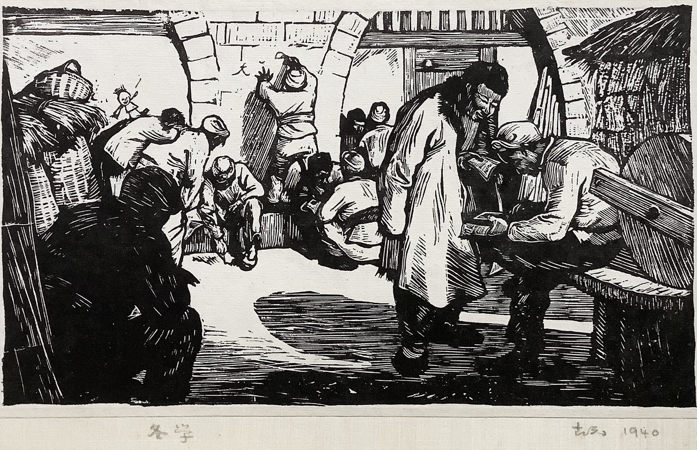
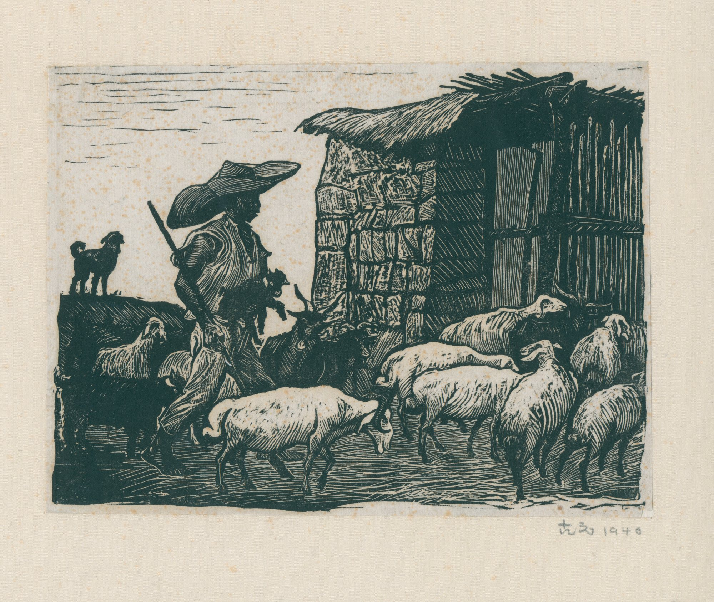
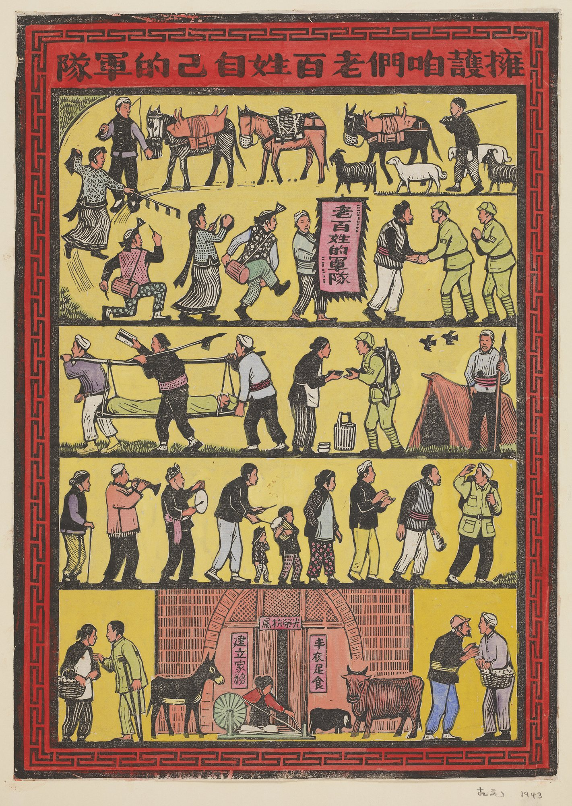
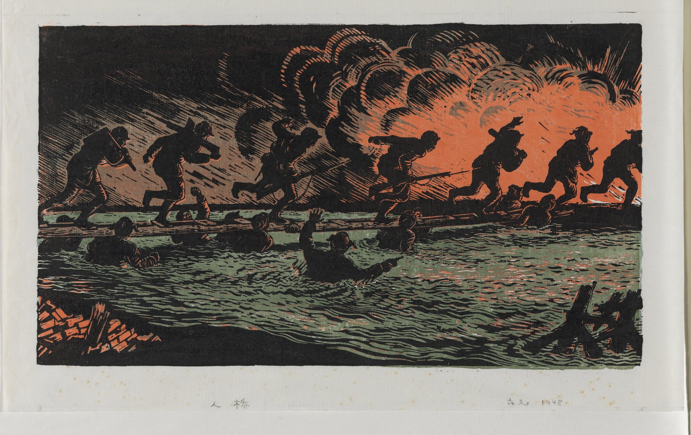

Chinese New Printmaking · Woodcut · Life Archive
The carved memory of modern China.
A museum-style digital archive dedicated to Gu Yuan's woodcut prints, watercolor works, life story, historical documents, exhibitions, and scholarly resources.
Featured Gallery
Yan'an Woodcuts




Major works from the Guyuan Museum digital collection.
Major Works
Major Works Collection
This collection presents a selection of Gu Yuan's most important woodcut prints, documenting rural life, social transformation, wartime memory, and the development of modern Chinese printmaking.
Featured Work
Support Our People's Own Army
擁護咱們老百姓自己的軍隊
Winter School
冬學
1940 · Woodcut print
Rent Reduction Meeting
減租會
1943 · Woodcut print
Human Bridge
人橋
1948 · Woodcut print
Early Spring
初春
1979 · Woodcut print
Life
Artist Timeline
A clean chronological pathway helps visitors understand Gu Yuan's movement from Guangdong to Yan'an, from revolutionary printmaking to national art education.
Works Database
Search by year, medium, theme, period, size, and collection source.
Essays & Research
Scholarly essays, exhibition texts, bibliography, and teaching notes.
Media Collection
Photos, letters, catalogues, newspaper clippings, and oral history.
Bilingual Access
English and Chinese navigation for international museum visitors.
Family Archive Guardian
Gu AncunChief Curatorial Resource
The family archive connection gives this online museum a direct cultural and historical foundation, supporting the preservation, interpretation, and institutional presentation of Gu Yuan's artistic legacy.
01
Family Archive Guardian
02
Chief Curatorial Resource
03
Institutional Archive Authority
Museum Structure
Major Museum Sections
Master Works Collection
Gu Yuan Life & History
Family Archive
International Research Center
Toronto Cultural Development Project
Museum Strategy
Built for collectors, scholars, students, and the public.
The website should feel like a serious archive, not a commercial shop. Use museum-level metadata, large quiet images, captions, and a strong research section.
Future functions can include advanced search, interactive map, exhibition mode, educational downloads, provenance notes, and collection-rights management.